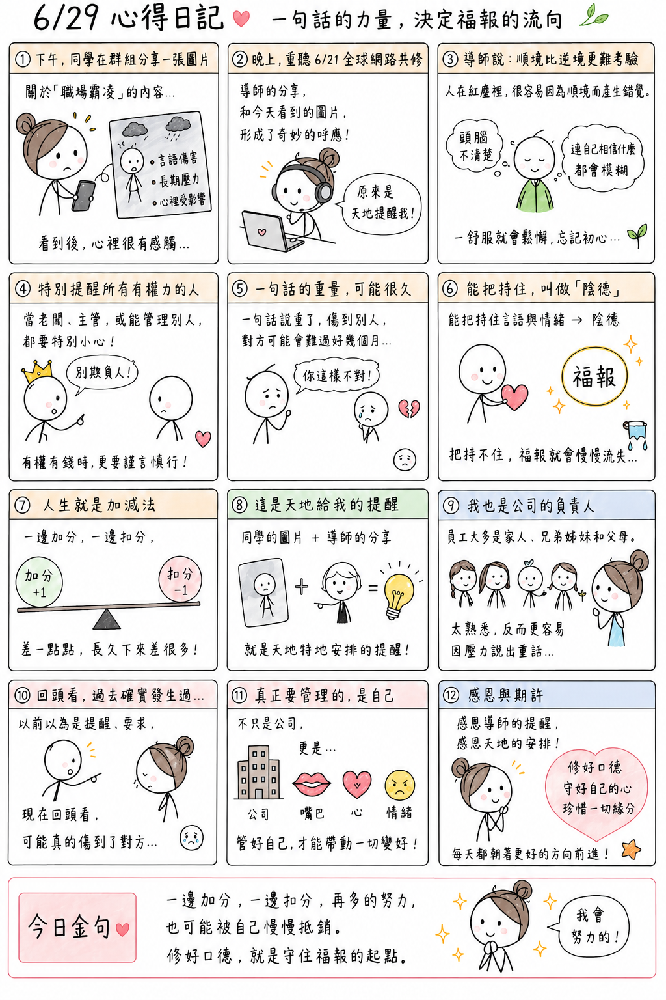

日期：2026/06/29

今天下午，大學同學在群組分享了一張關於「職場霸凌」的圖片。內容提到，現在的職場環境中，許多人都曾經遇過主管或上司言語上的傷害，甚至因此長期承受壓力。看到這張圖片時，我心裡就有不少感觸。
晚上，我再次重聽了 6 月 21 日的全球網路共修。沒想到，導師分享的內容，竟然和今天看到的那張圖片，形成了一個非常奇妙的呼應。
導師提到，人生活在紅塵裡，很容易因為順境而產生錯覺。如果沒有時時保持清楚的頭腦，慢慢地，連自己真正相信什麼幕會開始變得模糊。尤其順境，其實比逆境更難考驗。一旦日子過得太舒服，人就容易鬆懈、容易忘記初心。
導師也特別提醒，每一位當老闆、當主管，或是擁有管理權力的人，都一定要格外小心。尤其當一個人有了權力、有了財富，更不能因為自己的身分，而去欺負別人。有時候，只是一句話說重了，一句話傷到別人，對方可能就會難過好幾個月。
能夠把持住自己的言語與情緒，這叫做「陰德」；如果把持不住，可能就會讓自己長年累積的福報，一點一滴慢慢流失。導師說，人生就是這樣，一邊加分、一邊扣分，看起來差一點點，長久累積下來，差距卻會越來越大。
聽到這裡，我忽然覺得，今天同學分享的那張圖片，好像就是天地特地安排給我的一個提醒。
因為我自己也是公司的負責人。雖然平常一起工作的員工，大多都是自己的家人、兄弟姐妹和父母，但也正因為彼此太熟悉，有時候反而更容易因為工作的壓力、老闆的角色，而不自覺說出比較重的話。仔細回想，其實這樣的事情，過去確實曾經發生過。以前可能覺得只是提醒對方、希望事情做好，但現在重新回頭看，或許有些話，真的可能在無意間傷到了對方。
今天這堂共修，也讓我重新提醒自己，真正需要管理的，不只是公司，更是自己的情緒、自己的嘴巴，以及自己的心。
如果一邊努力做志工、學習超級生命密碼、累積資糧與福報；另一邊卻又因為一句話、一個情緒，默默地把福報扣掉，那真的就像導師說的，一邊加分、一邊扣分，到最後，很可能又回到了原點。
所以，我也再次提醒自己，未來不管工作再忙、壓力再大，都要先管好自己的這張嘴，學會用更柔軟、更有智慧的方式去表達。因為真正值得珍惜的，不只是事業上的成就，更是每一段人與人之間的緣分。
也感恩導師今天透過共修，再次提醒我；更感恩天地，讓我透過一張圖片和一堂共修課，在同一天收到同樣的訊息。我相信，這不是巧合，而是一份提醒。
未來，我也要繼續修好自己的口德、守好自己的心，珍惜天地所賜的一切，讓自己每天都朝著更好的方向前進。